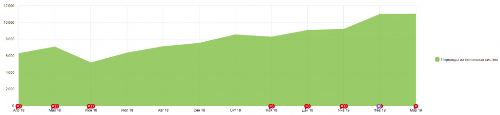
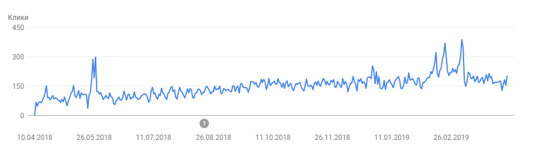
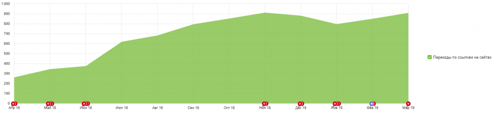
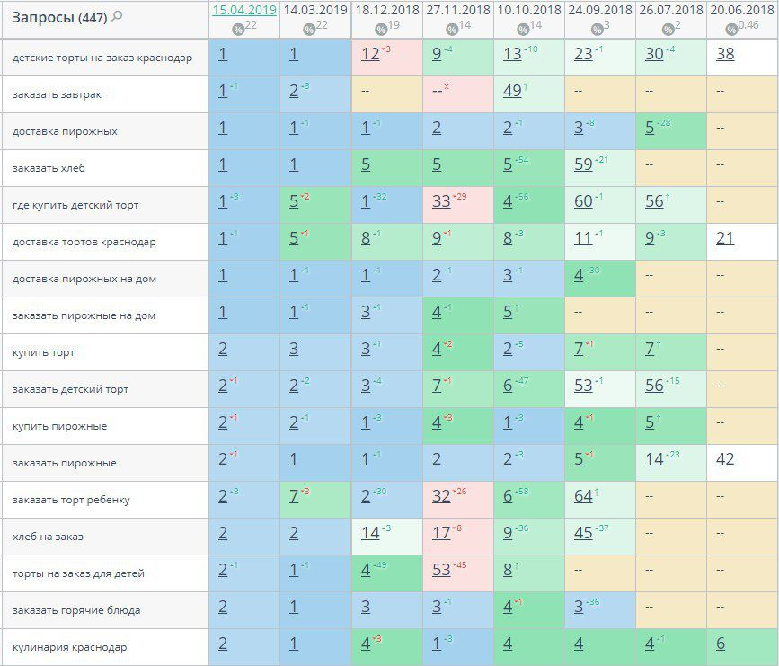

О проекте
О клиенте
Кулинария «Патрик&Мари» появилась в Краснодаре в далеком 2006 году. Это место, где на уютных диванчиках в домашней атмосфере можно вкусно позавтракать, пообедать и, конечно, поужинать. Здесь вам предложат огромный ассортимент различных блюд, которые не оставят равнодушным ни одного гурмана. Сайт создан для того, чтобы познакомить клиентов с продукцией компании. Также имеется возможность оставить заявку и заказать еду на дом с доставкой.
Задачи
Привлечь на сайт как можно больше аудитории по тематическим запросам для знакомства с брендом и ассортиментом. Повысить удобство пользования сайтом и его видимость для потенциальных клиентов.
Проведеные работы по оптимизации сайта
- Разработаны страницы Корзины и Оформления заказа
- Адаптировали сайт под мобильные устройства
- Составлена семантика по широкому спектру тематических запросов
- Проведен анализ удобства сайта
- Произведена оценка структуры сайта. Удалены ненужные элементы
- Составлены шаблоны для генерации тегов Title и мета-тега Description на всех страницах сайта
- Скорректированы H1-H2 заголовки
- Поданы корректные данные для каждого филиала компании в Яндекс. Справочник и другие справочники, где представлена компания
- Для всех категорий написаны уникальные тексты описания
- Повышение авторитетности сайта путем размещения ссылок на тематических площадках
- Исправлены проблемы с индексацией сайта
- Отслеживается функционал и работоспособность сайта
Динамика посещаемости и эффективность продвижения
Посещемость сайта из поисковых систем по данным Яндекс. Метрики за год выросла с 6300 до 11000 посещений в месяц:

Количество кликов по данным Google Search Console за год выросло более чем в 2 раза:

Также наблюдается значительное увеличение количества переходов с других сайтов:

Динамика позиций сайта в Google
Скриншот из сервиса поисковой аналитики Топвизор.

Заключение
Проводится дальнейшая доработка заголовков и мета-тегов сайта, создание ссылочного профиля, анализ юзабилити, проверка уникальности размещенных текстов и мониторинг доступности сайта. Также регулярно выносятся предложения по улучшению сайта и дополнительных способах привлечения аудитории.